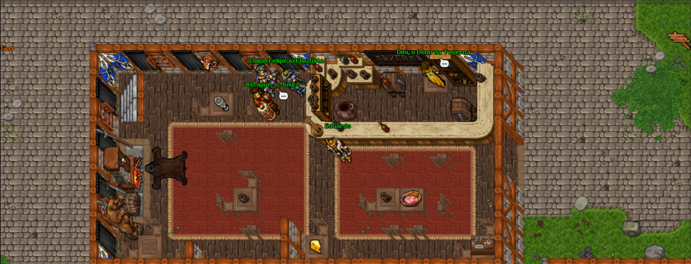

Ambiente com propósito
Organizo construções, caminhos, interiores e áreas externas para cada região ter função, ritmo e personalidade dentro do mapa.

Mapper e spriter para OTServ
Olá, meu nome é Eduardo Gaier e sou apaixonado pela criação de mapas e conteúdos visuais para servidores OTServ.
Experiência
Meu trabalho não é só preencher espaços. Eu crio ambientes que fazem sentido dentro do servidor, com leitura clara, detalhes visuais e transições pensadas para o jogador sentir que cada área pertence ao mesmo mundo.
Organizo construções, caminhos, interiores e áreas externas para cada região ter função, ritmo e personalidade dentro do mapa.
Trabalho bordas, pisos, relevo, objetos, decoração e pequenos elementos visuais para tirar o mapa do básico e deixar o cenário mais vivo.
Antes de detalhar, penso o mapa como um conjunto: cidades, hunts, rotas, áreas especiais e pontos de interesse conectados de forma natural.
Crio passagens entre floresta, neve, deserto, mina, montanha, praia e outros biomas sem cortes bruscos, mantendo exploração e navegação agradáveis.
Trabalhos realizados
Use os botões para escolher um trabalho, navegue pelas setas e clique em qualquer imagem para ampliar.
Áreas internas, construções, biblioteca, armazéns e composições de cidade.
Templos, áreas arenosas, vilas e sprites simples para composição visual.
Tavernas, docas, áreas congeladas e interiores com atmosfera medieval.
Minas, cavernas, áreas de minério e espaços subterrâneos para exploração.
Templos, montanhas, áreas externas e ambientes de fantasia customizados.
Mapas temáticos, construções e áreas de evento para servidores inspirados em Naruto.
Clientes atendidos
"Quero deixar um elogio ao mapper Edu, o Eduardo Gaier, pelo excelente trabalho. É um profissional extremamente competente, criativo e dedicado, entregando mapas de altíssima qualidade com muito capricho e atenção aos detalhes. Além do grande talento, transmite confiança, cumpre o que promete e mantém uma comunicação excelente durante todo o projeto. Recomendo de olhos fechados para quem procura um mapper sério, profissional e comprometido. Parabéns pelo excelente trabalho, Eduardo Gaier."
"Fez o que eu pedi e ainda entregou muito mais. Gostei bastante dos detalhes, das rotas e do acabamento das áreas."
"Além de ser extremamente profissional, tem muita empatia e um ótimo coração! Ajuda e cuida com muito carinho dos projetos em que trabalha."
"Demorou um pouco para entregar, mas foi flexível no pagamento e o trabalho ficou muito bom. Valeu a pena esperar."
Contato
Meu foco é entregar mapas criativos, jogáveis e visualmente atraentes, ajudando cada servidor a ter uma identidade única.